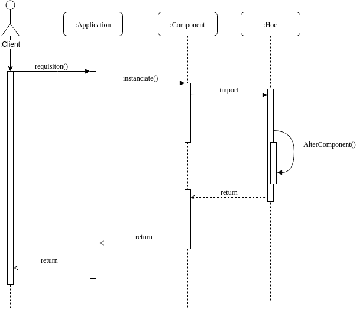
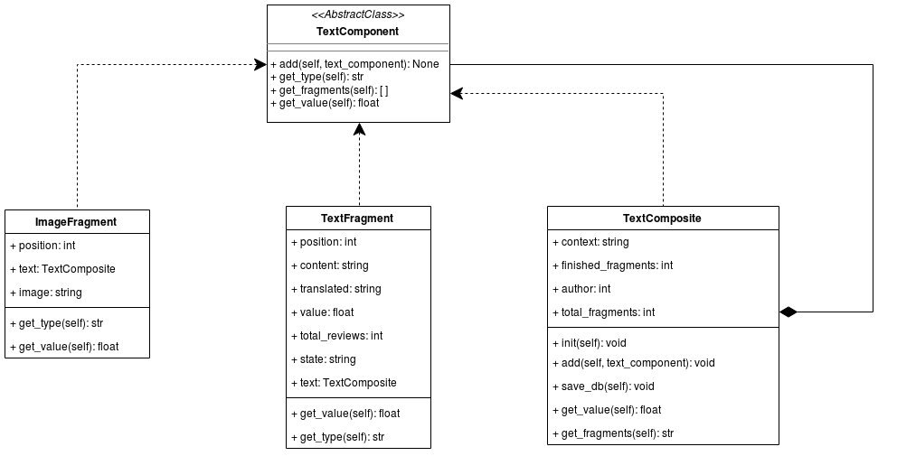
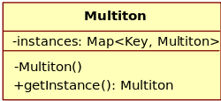

GOFs Vs. Emergentes
Histórico de Revisão
| Data | Versão | Descrição | Autor |
|---|---|---|---|
| 26/05/2019 | 0.1 | Adicionada estrutura do documento | Luiz Guilherme |
| 26/05/2019 | 0.2 | Adicionada explicação sobre HOCs | Luiz Guilherme |
| 26/05/2019 | 0.3 | Adicionados exemplos de implementação | Luiz Guilherme |
| 26/05/2019 | 0.4 | Adidionando tentativas falhas do Multiton e Observer | Gabriela Guedes e Letícia Meneses |
| 26/05/2019 | 0.5 | Adicionando descrição e análise do Composite | Renan Schadt e Rômulo Souza |
| 26/05/2019 | 0.6 | Adicionando diagrama de classes do Composite | Renan Schadt e Rômulo Souza |
1. High-order Components
1.1 O que é?
Um High-order component (HOC) é um padrão de projeto emergente aplicável em React para reutilizar lógicas de componente. HOCs não são partes do comportamento padrão do React e ele surge da natureza composicional do React. De forma breve, um HOC é uma função que recebe um componente como entrada e retorna um novo componente, com novos atributos.
Por muito tempo, o HOC foi o padrão mais popular para aprimorar e compor elementos em React e sua estrutura se assemelha com o padrão de um decorator, pois existe o encapsulamento do componente e o seu aprimoramento.
Para todas os efeitos práticos, 'decorators' e HOCs fazem a mesma coisa, porém quando você adiciona um decorator, a classe somente pode ser utilizada em sua forma decorada. O padrão HOC quando implementado, permite a utilização tanto do componente de ordem superior e de ordem inferior.
1.2 Benefícios
- Reaproveitamento de código da classe que teve o padrão de projeto aplicado;
- Outra característica do padrão é a criação de um buffer para lógica adicional. Por exemplo, se um componente acessa um servidor remoto, pode-se enfileirar estes dados em HOC e envia-lo como uma propriedade (prop).
1.3 Estrutura
1.3.1 Diagrama de Classes

1.3.2 Diagrama de Sequência

1.4 Exemplo
Um exemplo trivial seria este, que define uma função que implementa o HOC, que recebe como parâmetro um componente chamado OriginalTitle e retorna em um outro componente chamado EnhancedTitle, uma nova versão do componente, porém com alguns 'props' adicionados.
var enhanceComponent = (Component) =>
class Enhance extends React.Component {
render() {
return (
<Component {...this.props} />
)
}
};
var OriginalTitle = () => <h1>Hello world</h1>;
var EnhancedTitle = enhanceComponent(OriginalTitle);
class App extends React.Component {
render() {
return <EnhancedTitle />;
}
};
1.5 É aplicavel em nosso projeto?
A estrutura do HOC é facilmente aplicável no translate.me em todos os componentes que se aproveitam do Redux para manipulação de estados da aplicação:
Redux: A utilização do Redux aplica por padrão uma versão do High-order Component, que é conhecida como connect. Da mesma forma que apresentado, o Redux recebe como parâmetro um componente e adiciona todos os parâmetros presentes na store do Redux ao componente que foi 'conectado' e a partir de agora os dois componentes são acessíveis, em sua versão de alta-ordem e na versão original, 'não-conectada'.
Exemplo prático
A aplicação do Redux em nosso projeto e consequentemente pode ser exemplificada neste fragmento de código:
import React, { Component } from 'react';
import SimpleFooter from '../Components/SimpleFooter';
import store from './reduxStore';
class TextEditor extends React.Component {
constructor(props) {
super(props);
this.state = {editorState: EditorState.createEmpty()}
}
render() {
return (
<div>
<SimpleFooter>
<Container>
{...}
<Container />
<SimpleFooter/>
</div>
);
}
}
const mapStateToProps = function(state) {
return {
profile: state.user.profile,
loggedIn: state.auth.loggedIn
}
}
export default connect(mapStateToProps)(TextEditor);
2. Composite
2.1 O que é?
O Composite é um padrão de design estrutural que permite atrelar objetos diferentes através de uma mesma interface, para fazer alguma operação sobre todos ou trabalhar com estes individualmente.
O uso do Composite, faz sentido quando o que se tem interesse em representar, pode ser mostrado através de uma estrutura de árvore. O Composite é usado quando se deseja tratar elementos simples e complexos da mesma maneira.
2.2 Aplicação
Nossa aplicação de Composite considera que um texto contém fragmentos e estes podem conter textos, imagens, tabelas, entre outros. Apesar de que para o escopo da matéria, nós só levaremos em conta fragmentos de texto, a utilização do Composite nos permite adicionar novos tipos de fragmento futuramente, sem quebrar a implementação já existente.
Usando a mesma interface para os vários tipos de fragmentos (Composite), é possível realizar operações sobre uma lista destes, como a operação para somar o valor total de tradução do texto.
2.3 Exemplo

3. Helena
4. Padrões não aplicaveis para o projeto
4.1 Multiton
4.1.1 O que é?
O multiton consiste na utilização de um método para retornar um objeto. Esse método deve receber uma chave, e caso já exista um objeto com essa chave, ele é retornado, caso contrário, um novo objeto é criado.

4.1.2 Como tentamos implementar
Tentativa da implementação do multiton foi na criação de categorias para o texto, onde ele verificaria se já não existe uma catogoria criada com o mesmo nome.
4.1.3 Porque não funciona
O Django Rest contem a serializer que já faz a verificação dos campos com o banco de dados, o que torna a utilização do multiton desnecessária. Além de que para implementar este padrão de projeto, seria necessário sobreescrever a serializer, pois não há acesso direto a classe pelos metodos post. A sobrescrita ou o não uso da serializer seria um erro para o projeto já que ela é responsável por converter dados complexos para tipos JSON e xml e assim validando esses dados.
4.2 Observer
4.2.1 O que é?
É um padrão de projeto que define uma dependência de um para muitos entre objetos, de modo que, quando um objeto muda o estado todos os seu dependentes são notificados e atualizados automaticamente. Permite que objetos interessados sejam avisados da mudança de estado ou outros eventos ocorridos em outro objeto.

4.2.2 Como tentamos implementar
4.2.2.1 Tentativa 1 - Atualizar o Texto de acordo com os Fragmentos
A ideia inicial era que de acordo com os estados do andamento dos fragmentos de tradução do texto, o estado do texto final fosse atualizado para que o autor soubesse do andamento do seu texto.
4.2.2.2 Tentativa 2 - Atualizar os Fragmentos para inativo quando o pedido de tradução for cancelado
A tentativa consistiu em que quando um pedido de tradução fosse cancelado, todos os seus fragmentos também ficassem inativos.
4.2.3 Porque não funciona
4.2.3.1 Tentativa 1 - Atualizar o Texto de acordo com os Fragmentos
Essa implementação foge da definição do padrão Observer, pois estariamos aplicando uma notificação de muitos para um, enquanto o padrão funciona de um para muitos. Logo sendo descartado no inicio da implementação.
4.2.3.2 Tentativa 2 - Atualizar os Fragmentos para inativo quando o pedido de tradução for cancelado
A plataforma Django, junto com o SQL, já possui vários métodos internos que fazem esta função de remover os fragmentos relacionados ao texto por uma chave estrangeira.
3. Referências
3.1 Links de sites
3.2 Livros e artigos
[1] LISBÔA, Jonivan Coutinho; DE CARVALHO, Sérgio Teixeira; LOQUES FILHO, Orlando Gomes. Um Design Pattern para Configuração de Arquiteturas de Software. In: The 2nd. Latin America Conference on Progamming Languages of Patterns. 2002.